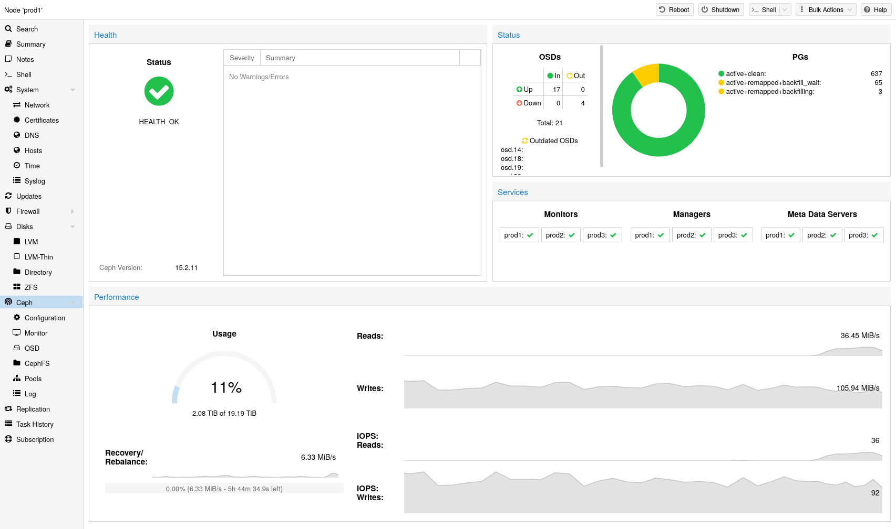

Proxmox VE unifies your compute and storage systems, that is, you can use the same physical nodes within a cluster for both computing (processing VMs and containers) and replicated storage. The traditional silos of compute and storage resources can be wrapped up into a single hyper-converged appliance. Separate storage networks (SANs) and connections via network attached storage (NAS) disappear. With the integration of Ceph, an open source software-defined storage platform, Proxmox VE has the ability to run and manage Ceph storage directly on the hypervisor nodes.
Ceph is a distributed object store and file system designed to provide excellent performance, reliability and scalability.
Some advantages of Ceph on Proxmox VE are:
For small to medium-sized deployments, it is possible to install a Ceph server for using RADOS Block Devices (RBD) or CephFS directly on your Proxmox VE cluster nodes (see Ceph RADOS Block Devices (RBD)). Recent hardware has a lot of CPU power and RAM, so running storage services and virtual guests on the same node is possible.
To simplify management, Proxmox VE provides you native integration to install and manage Ceph services on Proxmox VE nodes either via the built-in web interface, or using the pveceph command line tool.